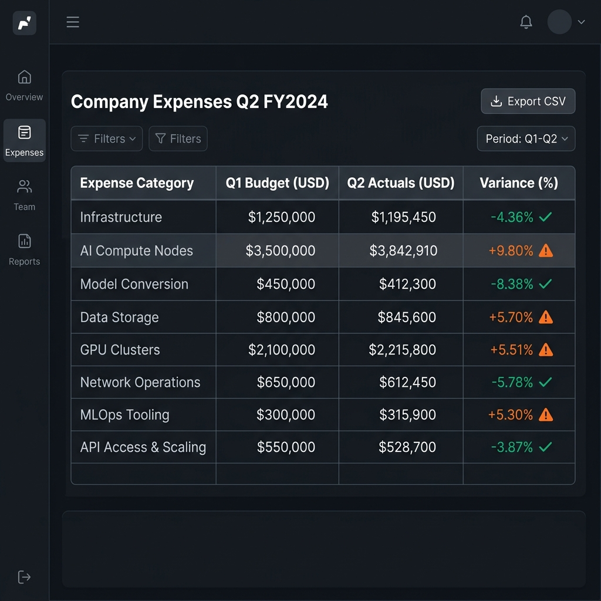

<!DOCTYPE html>
<html lang="en">
<head>
  <meta charset="UTF-8">
  <meta name="viewport" content="width=device-width, initial-scale=1.0">
  <meta name="description" content="SLM Document Parser: Local CPU-optimized PDF, DOCX, and text layout structure parser matching target schemas offline using Phi-3.5.">
  <title>SLM Document Parser | Documentation</title>
  <link rel="stylesheet" href="style.css">
  
</head>
<body>
  <header>
    <div class="container nav-container">
      <div style="display: flex; align-items: center; gap: 10px;">
        <button class="sidebar-toggle" onclick="toggleSidebar()">
          <svg width="24" height="24" fill="none" stroke="currentColor" stroke-width="2" viewBox="0 0 24 24">
            <path stroke-linecap="round" stroke-linejoin="round" d="M4 6h16M4 12h16M4 18h16"/>
          </svg>
        </button>
        <a href="index.html" class="logo">
          <div class="logo-icon">
            <svg width="18" height="18" viewBox="0 0 24 24" fill="none" stroke="currentColor" stroke-width="2.5" stroke-linecap="round" stroke-linejoin="round">
              <path d="M12 2L2 7l10 5 10-5-10-5zM2 17l10 5 10-5M2 12l10 5 10-5"/>
            </svg>
          </div>
          <span>SLM Agents</span>
        </a>
      </div>
      <nav>
        <ul>
          <li><a href="index.html">Home</a></li>
          <li class="dropdown">
            <a class="dropdown-trigger" style="color:var(--primary)">
              Frameworks
              <svg width="12" height="12" viewBox="0 0 24 24" fill="none" stroke="currentColor" stroke-width="3" stroke-linecap="round" stroke-linejoin="round"><path d="M6 9l6 6 6-6"/></svg>
            </a>
            <div class="dropdown-content">
              <a href="orchestrator.html">Orchestrator Docs</a>
              <a href="rag.html">RAG Docs</a>
              <a href="summarizer.html">Summarizer Docs</a>
              <a href="sql.html">Text-to-SQL Docs</a>
              <a href="cli.html">CLI Docs</a>
              <a href="code_interpreter.html">Code Interpreter Docs</a>
              <a href="git_copilot.html">Git Co-pilot Docs</a>
              <a href="json_cleaner.html">JSON Cleaner Docs</a>
              <a href="document_parser.html">Document Parser Docs</a>
              <a href="vision_parser.html">Vision Parser Docs</a>
              <a href="web_agent.html">Web Agent Docs</a>
              <a href="web_scraper.html">Web Scraper Docs</a>
              <a href="search_orchestrator.html">Search Orchestrator Docs</a>
            </div>
          </li>
          <li><a href="index.html#upcoming">Roadmap</a></li>
        </ul>
      </nav>
    </div>
  </header>

  <div class="layout-container">
    <aside class="sidebar" id="sidebar">
      <div class="sidebar-group">
        <div class="sidebar-group-title">Active Libraries</div>
        <ul class="sidebar-list" id="sidebar-active-list"></ul>
      </div>
    </aside>

    <main class="main-content">
      <div class="doc-content-wrapper">
        <section class="doc-section" style="margin-top: 0;">
          <div class="breadcrumb" style="font-size: 0.85rem; color: #475569; margin-bottom: 1rem; font-weight: 600;"><a href="index.html" style="color: #4f46e5; text-decoration: none;">Home</a> <span style="margin: 0 6px;">›</span> <span style="color: #0f172a;">SLM Document Parser</span></div>
          <div class="badge-pill">📂 Local Document Extraction</div>
          <h1 style="font-size: 2.25rem; color: #0f172a; font-weight: 800; margin-bottom: 0.75rem;">SLM Document Parser</h1>
          <p style="font-size: 1.05rem; color: #334155; line-height: 1.65; font-weight: 500; margin: 0;">Extract tabular metrics, metadata structures, and key paragraphs from PDFs, Word docs, and plain text files locally under strict MIT-licensing parameters.</p>
        
        <nav class="doc-nav">
          <a href="#overview">Overview</a>
          <a href="#install">Installation</a>
          <a href="#config">Configuration API</a>
          <a href="#logs">Verified Logs</a>
        </nav>

        
        <h2>🚀 Overview &amp; Capabilities</h2>
        <p>The SLM Document Parser leverages Microsoft's MIT-licensed <strong>Phi-3.5-mini-instruct</strong> and <strong>Florence-2-large</strong> models optimized via ONNX Runtime GenAI to parse multi-formatted documents offline. It supports high-fidelity layout preservation for scanned PDFs and legacied formats (<code>.pdf</code>, <code>.docx</code>, <code>.doc</code>, <code>.pptx</code>, <code>.ppt</code>, <code>.txt</code>) to output structured text and semantic RAG database chunks.</p>
      </section>

        <section class="doc-section" id="workflow">
        <h2>🤖 Truly Agentic Hybrid Visual Pipeline</h2>
        <p>The Document Parser handles layout mapping by combining visual coordinate classifiers with standard extraction loops:</p>
        <ul>
          <li><strong>LibreOffice Conversion Layer:</strong> Converts complex formats (DOC/PPT/PPTX) into intermediate PDFs in the background using headless <code>soffice</code> conversions.</li>
          <li><strong>Page Image Rendering:</strong> Renders PDF page indices to images sequentially using <code>pypdfium2</code>.</li>
          <li><strong>Florence-2 OCR &amp; OD:</strong> Scans rendered page layouts, running Object Detection (<code>&lt;OD&gt;</code>) to locate table and figure boxes. Crops table boxes to OCR them individually, and runs detailed caption generation (<code>&lt;DETAILED_CAPTION&gt;</code>) for diagrams.</li>
          <li><strong>Layout Reconstruction:</strong> Passes text, parsed tables, and diagram captions to Phi-3.5 to synthesize a unified, formatted Markdown page representation.</li>
          <li><strong>Semantic Chunker &amp; Linker:</strong> Segments markdown into structured paragraph chunks, extracts heading hierarchies, resolves product entities, and links related sections together.</li>
        </ul>
      </section>

        <section class="doc-section" id="visual-demo">
        <h2>📊 Complex Table Visual OCR Extraction</h2>
        <p>When the visual parser encounters complex tables inside a document scan, it crops the table coordinates, routes it to the vision parser, and synthesizes a natural language text description. Below is an example of an input expense table and its corresponding parsed description:</p>
        
        <div style="margin: 20px 0; max-width: 600px; border-radius: 12px; overflow: hidden; border: 1px solid rgba(255, 255, 255, 0.05); box-shadow: 0 10px 30px rgba(0,0,0,0.5);">
          
        </div>

        <div class="tip-box">
          <strong>Extracted Natural Language Table Description Output:</strong><br>
          <pre><code>### Q2 FY2024 Company Expense Summary
The table outlines corporate expenditures across multiple categories:
- **Infrastructure**: Spent $1,195,450 against a $1,250,000 budget (a decrease of 4.36%).
- **AI Compute Nodes**: Spent $3,842,910 against a $3,500,000 budget (an increase of 9.80%).
- **Model Conversion**: Spent $412,300 against a $450,000 budget (a decrease of 8.38%).
- **Data Storage**: Spent $845,600 against a $800,000 budget (an increase of 5.70%).
- **GPU Clusters**: Spent $2,215,800 against a $2,100,000 budget (an increase of 5.51%).</code></pre>
        </div>
      </section>

        <section class="doc-section" id="tuning">
        <h2>⚡ CPU Performance Tuning Guidelines</h2>
        <p>Follow these configuration rules to optimize latency on standard CPUs:</p>
        <ul>
          <li><strong>Core Thread Cap:</strong> Set <code>n_threads</code> strictly to the number of physical cores to avoid context switching thread collisions.</li>
          <li><strong>Sequential Processing:</strong> Process multi-page images sequentially instead of in parallel batches to keep the memory footprint under 2.0 GB.</li>
          <li><strong>OpenMP Settings:</strong> Keep thread counts aligned in your shell environment:
            <pre><code>export OMP_NUM_THREADS=4
export MKL_NUM_THREADS=4</code></pre>
          </li>
        </ul>
      </section>

        <section class="doc-section" id="api">
        <h2>API Reference</h2>
        
        <h3>`SLMDocumentParser` Initialization</h3>
        <pre><code class="language-python">from slm_document_parser.document_parser import SLMDocumentParser

parser = SLMDocumentParser(n_ctx=4096, n_threads=4)</code></pre>
        
        <table class="param-table">
          <thead>
            <tr><th>Parameter</th><th>Type / Default</th><th>Description</th></tr>
          </thead>
          <tbody>
            <tr><td>model_path</td><td>str | None</td><td>Local path to Phi-3.5 weight checkpoints. Defaults to "../../models/phi-3.5-mini-instruct-onnx".</td></tr>
            <tr><td>n_ctx</td><td>int | 4096</td><td>Inference token window size. Phi-3.5 supports up to 128K context tokens.</td></tr>
            <tr><td>n_threads</td><td>int | 4</td><td>Allocated CPU cores for ORT execution.</td></tr>
                        <tr><td>system_prompt</td><td>str | None</td><td>Optional custom system prompt instructions overriding the default template.</td></tr>
              <tr><td>user_input</td><td>str | None</td><td>Optional additional user-supplied target parameters or variables.</td></tr>
</tbody>
        </table>

        <h3>`extract_text` Method</h3>
        <p>Converts document layouts and images into a single reconstructed Markdown text string:</p>
        <pre><code class="language-python">markdown_content = parser.extract_text("financial_report.pdf")</code></pre>

        <h3>`chunk_document` Method</h3>
        <p>Extracts markdown text and slices it into linked semantic chunks with metadata properties:</p>
        <pre><code class="language-python">chunks = parser.chunk_document("financial_report.pdf")
print(chunks[0])</code></pre>

        <div class="tip-box">
          <strong>Extracted Semantic Chunk Output (JSON):</strong><br>
          <pre><code class="language-json">{
  "text": "SpaceX successfully launched the Falcon 9 rocket from Cape Canaveral Space Force Station, landing the booster return flight for the 15th time. The mission delivered communication payloads into low Earth orbit.",
  "metadata": {
    "source": "financial_report.pdf",
    "heading": "1. Launch Milestones",
    "subheading": "Falcon 9 Performance",
    "product": "SpaceX",
    "key_terms": ["Falcon 9", "Cape Canaveral", "booster"],
    "format": "pdf",
    "chunk_index": 0,
    "related_chunks": [1, 2]
  }
}</code></pre>
        </div>

        <h3>`parse_and_chunk_stream` Method</h3>
        <p>Streaming generator yielding semantic chunks page-by-page as they are processed to reduce first-chunk response times (TTFT):</p>
        <pre><code class="language-python">for chunk in parser.parse_and_chunk_stream("multi_page_manual.pdf"):
    print(f"Processed Chunk: {chunk['text'][:100]}...")</code></pre>

        <h3>`export_chunks_to_excel` Method</h3>
        <p>Saves the parsed chunks to an Excel spreadsheet:</p>
        <pre><code class="language-python"># Exports to workbook. Set append=True to write to an existing sheet
parser.export_chunks_to_excel(chunks, "rag_dataset.xlsx", append=False)</code></pre>

        <div class="tip-box">
          <strong>Output Excel Table Layout:</strong><br>
          <table class="param-table">
            <thead>
              <tr><th>Chunk Index</th><th>Source File</th><th>Heading</th><th>Subheading</th><th>Product</th><th>Related Chunks</th><th>Text</th></tr>
            </thead>
            <tbody>
              <tr><td>0</td><td>financial_report.pdf</td><td>1. Launch Milestones</td><td>Falcon 9 Performance</td><td>SpaceX</td><td>1,2</td><td>SpaceX successfully launched the Falcon 9...</td></tr>
                          <tr><td>system_prompt</td><td>str | None</td><td>Optional custom system prompt instructions overriding the default template.</td></tr>
              <tr><td>user_input</td><td>str | None</td><td>Optional additional user-supplied target parameters or variables.</td></tr>
</tbody>
          </table>
        </div>
      </section>

        <footer style="margin-top: 3rem; text-align: center; border-top: 1px solid #cbd5e1; padding-top: 2rem; color: #475569; font-size: 0.9rem; font-weight: 500;">
          <p>© 2026 SLM Agents. Built with Apache 2.0 Permissive Open Source License.</p>
        </footer>
      </div>
    </main>
  </div>

  <script src="app.js"></script>
</body>
</html>
